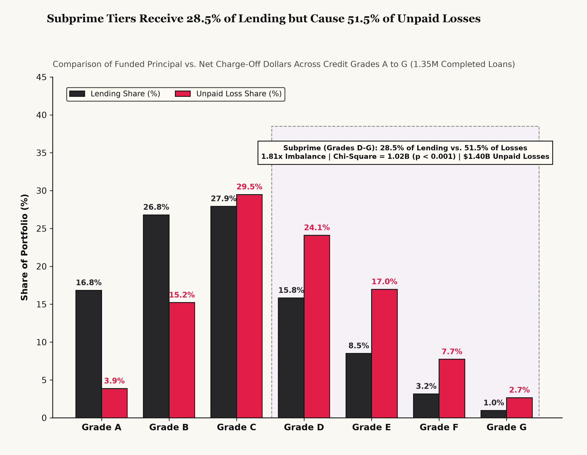
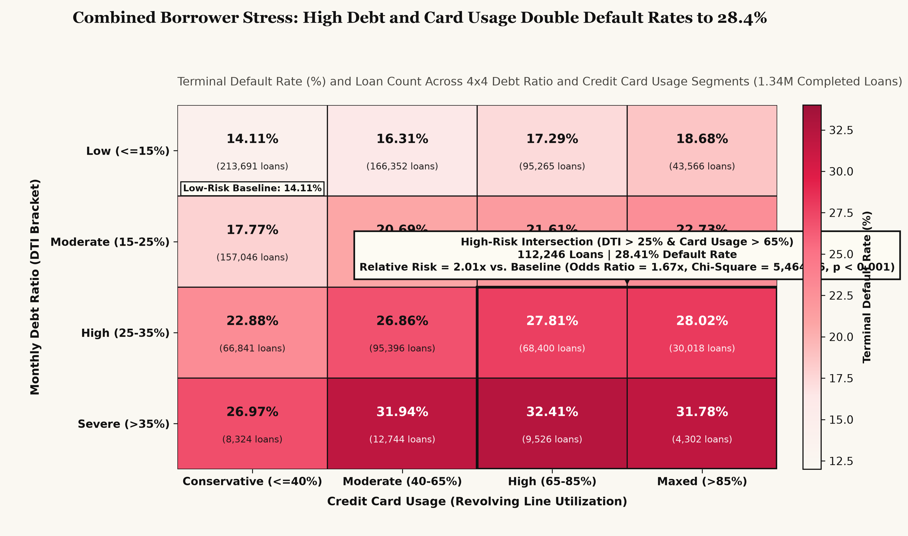
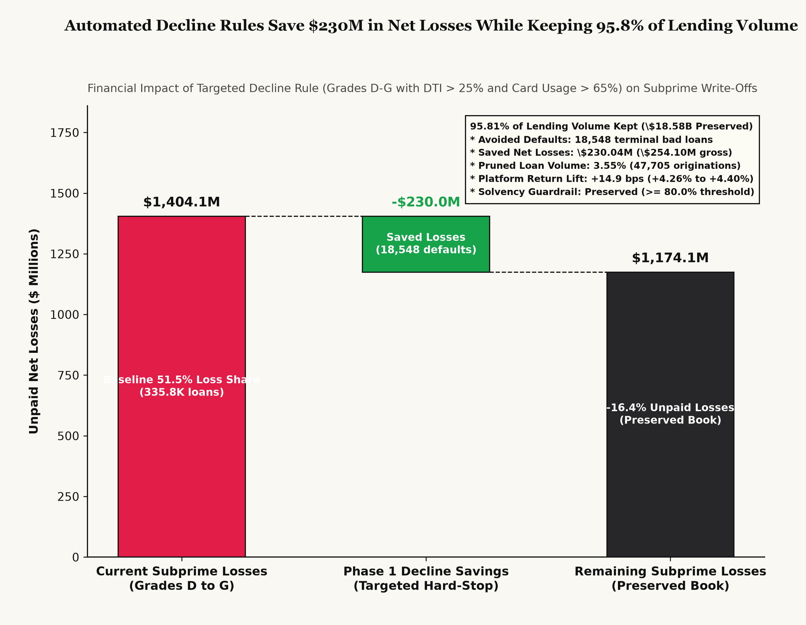

An empirical analysis across 1,345,350 completed consumer loans ($19.39B funded). How targeted algorithmic decline rules recover $230.0M in net unpaid write-offs while keeping 95.8% of platform lending volume.
Between 2007 and 2018, LendingClub expanded rapidly from an online peer-to-peer originator into an institutional credit marketplace, funding over 2.26 million consumer loans representing $33.98B in total capital. Yet rapid origination growth created a dangerous underlying vulnerability: portfolio expansion into subprime borrower tiers quietly drove credit losses to record levels while standard executive dashboards masked the deterioration.
This case study presents the forensic portfolio audit commissioned to resolve that vulnerability. By restructuring the analytical dataset, isolating lifecycle seasoning curves, and diagnosing the non-linear interaction between borrower leverage and liquidity depletion, we designed an algorithmic underwriting policy that preserves institutional solvency while safeguarding commercial origination scale.
When standard business reporting evaluated the historical database, it calculated a portfolio default rate of 11.88% (268,648 defaults out of 2.26 million total notes). This apparent stability led executives and institutional allocators to believe credit risk was safely contained.
In consumer credit, loans do not default evenly across time. Instead, they follow a pronounced seasoning hazard curve: during the initial 6 to 9 months, borrowers prioritize payments to protect their newly acquired credit lines. Default velocity peaks sharply between months 12 and 24, before tapering off as mature balances amortize.
Because the platform expanded originations exponentially in its later years, 912,569 loans ($14.59B) were active accounts still making monthly payments. With a median seasoning age under 14 months, these active loans had simply not lived long enough to experience peak default hazard. Blending immature accounts into the portfolio denominator artificially diluted the historical default rate by 40%.
To establish a mathematically sound baseline for underwriting policy design, we bifurcated the portfolio into two distinct analytical cohorts:
1. The Matured Study Cohort (1,345,350 loans / $19.39B): Accounts that reached definitive terminal resolution (either Fully Paid or Charged Off / Default). This cohort eliminates right-censoring bias and provides ground-truth default outcomes.
2. The Active Surveillance Cohort (912,569 loans / $14.59B): Accounts still in repayment, segregated for ongoing credit surveillance and early delinquency intervention rather than underwriting rule derivation.
| Population Segment | Loans | Capital | Default Rate |
|---|---|---|---|
| Raw Historical Book | 2,260,668 | $33.98B | 11.88% (Apparent) |
| Completed Study Cohort | 1,345,350 | $19.39B | 19.96% (Seasoned) |
| Active Open Accounts | 912,569 | $14.59B | Monitoring Only |
| Late Active (16-120 days) | 38,114 | $588.5M | Workout Target |
LendingClub segmented borrowers into seven risk tiers from Grade A (highest credit quality) down to Grade G (deep subprime). As the marketplace scaled, origination quotas pushed capital aggressively into lower-grade tiers to capture higher contractual interest yields (18% to 30% APR). However, our cohort audit revealed an extreme structural imbalance in capital allocation vs. charge-off losses.
While subprime loans (Grades D through G) absorbed 28.45% of platform capital ($5.52B across 335,813 loans), they generated 51.45% of total unpaid write-offs ($1.40B out of $2.73B total). A formal Chi-Square Goodness-of-Fit test (χ² = 1.02B, p < 0.001) confirms that subprime losses exceeded proportional capital allocation by an alarming 1.81 times.

A healthy lending business relies on risk-based pricing to generate positive net cash margins across each credit grade. In our portfolio analysis, however, prime borrowers were effectively forced to subsidize deep subprime deficits:
Borrowers in Grades A through C generated +$857.0M in cumulative net cash profit, funding over 104% of total platform earnings. Grade A and B borrowers exhibited disciplined repayment (default rates between 5.9% and 13.5%), delivering +$654.0M in net profit despite conservative interest rates. Grade C added another +$203.0M.
In sharp contrast, the lowest credit tiers suffered from default rates that completely overwhelmed high contractual interest rates. Grade F borrowers defaulted at 45.2%, while Grade G borrowers defaulted at 49.9% (literally a coin flip).
Combined, Grades F and G produced an absolute cash deficit (-$31.9M net cash loss). Charging 25% to 30% APR could not mathematically compensate for half of all borrowers walking away from their principal obligations. Continued unconstrained origination in these tiers was destroying economic value.
| Credit Tier | Lending Share | Loss Share | Net Cash Return |
|---|---|---|---|
| Grades A & B (Low Risk) | 46.7% ($9.0B) | 24.5% ($668M) | +$654M Net Profit |
| Grade C (Moderate Risk) | 24.9% ($4.8B) | 24.1% ($656M) | +$203M Net Profit |
| Grades D & E (High Risk) | 24.1% ($4.7B) | 41.8% ($1.14B) | Eroded by Defaults |
| Grades F & G (Highest Risk) | 4.4% ($850M) | 9.7% ($264M) | -$32M Direct Loss |
While Grade C overall earns +4.21% net return, portfolio profitability drops below our +4.00% executive hurdle starting specifically at Subgrade C4 (+3.44% net return across 74,422 loans), slides further to +2.64% across Grade D, and turns completely negative at Subgrade E5 (-1.34% net return, descending to -9.81% in G5).
Beyond credit grade tiering, two structural dimensions leak substantial capital:
1. 5-Year (60-Month) Loans: Default at 32.45% (2.03x the 16.00% rate of 36-month loans), cutting net returns in half (+2.57% vs. +5.12%).
2. Unsecured Small Business Loans ($240.1M funded): Hit a 29.71% default rate and lose money overall (-0.59% net return).
To reduce subprime losses without triggering commercial collapse, we investigated the underlying financial mechanics that drive consumer credit default. Traditional underwriting models frequently rely on univariate filters, screening borrowers strictly on Debt-to-Income (DTI) or strictly on credit card utilization. Our empirical findings demonstrate why univariate screening consistently fails.
Screening on Debt-to-Income alone penalizes high-earning professionals with substantial mortgages or student loans who comfortably service their debts out of significant residual income. Conversely, screening on credit card utilization alone penalizes disciplined prime borrowers who actively use credit cards for rewards and pay balances in full each month.
Univariate cutoffs are blunt: they reject creditworthy borrowers, causing high commercial friction, while failing to catch high-risk borrowers who sit just below individual thresholds.
Consumer default is fundamentally a liquidity crisis. We tested the joint interaction of two complementary financial dimensions:
1. Structural Cash Flow Strain (Monthly Debt Ratio / DTI): Measures what proportion of a borrower's gross monthly income is legally committed to debt payments. High DTI indicates low monthly discretionary cash flow.
2. Liquidity Reserve Exhaustion (Revolving Credit Card Utilization): Measures the percentage of available credit lines already drawn. High utilization indicates that the borrower has depleted their emergency credit buffer.
When a borrower experiences one stressor in isolation, they can typically survive: a borrower with high DTI can tap open credit cards to navigate an unexpected expense, while a borrower with maxed-out credit cards can use high discretionary monthly income to pay down balances.
However, when both variables cross critical thresholds simultaneously (DTI > 25% AND Card Utilization > 65%), the borrower enters a catastrophic liquidity trap. They have zero monthly cash flow buffer and zero available credit lines. Any routine financial shock (a car breakdown, unexpected medical co-pay, or temporary hours reduction) leaves them unable to meet debt service, triggering immediate loan abandonment.

Across the 1.345 million completed loan cohort, the 4x4 risk grid illustrates a continuous, compounding escalation of default probability:
* Low-Risk Baseline (DTI ≤ 15% and Utilization ≤ 40%): Default rate of only 14.11% across 213,691 loans. These borrowers possess both substantial disposable income and deep liquidity reserves.
* Moderate-Risk Transition Zone: As either metric increases independently, default rates rise modestly into the 16% to 22% range.
* High-Stress Intersection (DTI > 25% and Utilization > 65%): Default rates surge to 28.41% across 112,246 loans. When restricted specifically to subprime borrowers (Grades D through G), the default rate in this high-stress quadrant spikes to an astonishing 38.88%.
Statistical testing confirms that borrowers in this high-stress quadrant face a 2.01x relative risk compared to low-risk peers, with an odds ratio of 1.67x (95% CI: 1.65 to 1.69) and a Chi-Square test statistic of 5,465 (p < 0.001).
Eliminates all $5.52B in subprime volume (28.45% of the total loan portfolio).
Declines only the 47,705 subprime applications in the high-stress quadrant defaulting at 38.88%.
To prove the commercial and financial feasibility of Option B before production deployment, we modeled the proposed automated decline filter through an empirical policy simulation against the matured loan book.
The simulation tracks the exact financial trade-offs of declining 47,705 subprime applications in the dual-stress quadrant ($813.1M in funded capital). It accounts for averted charge-offs as well as forfeited origination fees and lost contractual interest from the non-defaulting portion of the pruned book.

The waterfall model walks through three foundational steps:
1. Baseline Subprime Losses ($1,404.1M): Current cumulative net write-offs generated by Grades D through G across 335,800 mature notes.
2. Phase 1 Automated Hard-Stop Savings (-$230.04M net): Declining the 47,705 dual-stress subprime loans averts 18,548 terminal defaults, eliminating $254.10M in gross principal write-offs. After subtracting $24.06M in forfeited interest and servicing fee margin from the 29,157 performing loans in that cohort, the net capital recovery is $230.0M.
3. Preserved Subprime Losses ($1,174.1M): Following rule implementation, subprime losses contract by -16.4%, while the platform preserves $18.58B (95.81%) of total originations.
The true power of the targeted hard-stop lies in its capital efficiency ratio: the policy eliminates 38.88% of default volume in the target segment while pruning only 3.55% of platform loan count. Rather than sacrificing platform scale, we prune only the concentrated toxic tail.
At the enterprise portfolio level, net return on capital (LAROC) expands by +14.9 basis points (from +4.26% to +4.40%), solidly above the executive +4.00% profit hurdle. Concurrently, the seasoned portfolio default rate declines from 19.96% to 18.99%, successfully clearing the 19.30% executive default ceiling.
| Implementation Scenario | Saved Net Losses | Rate Pricing Lift | Total Value Created | Defaults Prevented | Volume Retained |
|---|---|---|---|---|---|
| 60% Conservative Rollout (Gradual Test) | +$138.0M | +$8.5M | +$146.5M | 11,129 | 97.4% |
| 80% Year 1 Target (Enterprise Adoption) | +$184.0M | +$11.4M | +$195.4M | 14,838 | 96.6% |
| 100% Production Rule (Full Deployment) | +$230.0M | +$14.2M | +$244.2M | 18,548 | 95.81% ($18.58B) |
Transitioning econometric insights into production decisioning requires a disciplined operational framework. A sudden, uncoordinated rule deployment risks credit delivery disruption, adverse regulatory scrutiny, or borrower attrition.
We designed a structured 90-day phased rollout strategy divided into three distinct execution stages, assigning explicit ownership across Underwriting Policy, Risk Analytics, and Servicing Operations.
| Timeline | Action Item | Target Borrower Cohort | Owner | Financial Impact |
|---|---|---|---|---|
| Phase 1: Immediate Days 1 to 30 |
Automated Decline Filter Embed algorithmic hard-stop at application intake. |
Grades D-G applicants with DTI > 25% AND card utilization > 65% (47,705 originations). | Underwriting Policy | +$230.0M saved losses 18,548 defaults averted |
| Phase 2: Near-Term Days 30 to 60 |
Subgrade C4 Repricing Tighten marginal prime pricing and 5-year terms. |
Add +1.50% (+150 bps) interest rate to 74,422 Subgrade C4 loans; require 680+ FICO on 5-year loans. | Pricing & Risk Analytics | +$14.2M net revenue Restores +4.00% hurdle |
| Phase 3: Ongoing Days 60 to 90 |
Small Business Verification Require tax returns for unverified business debt. |
Unsecured business loans ($240.1M book; 29.71% default rate); early intervention on 38K late accounts. | Credit Servicing Operations | Stops -0.59% cash loss 15% delinquency recovery |
Each phase adheres to strict credit industry governance standards:
* Adverse Action & Fair Lending (FCRA / ECOA): For Phase 1 declined applications, the decisioning engine generates standardized adverse action notices citing specific objective credit bureau variables ("Excessive debt obligations relative to income" and "High revolving credit line utilization"). This ensures full compliance with Equal Credit Opportunity Act (Regulation B) requirements.
* Subgrade C4 Yield Optimization: Subgrade C4 represents a pivotal threshold where default risk jumps to 22.8% while interest rates remain compressed at prime levels. Adding +150 bps to 74,422 notes generates +$14.2M in net pricing yield, lifting marginal tier returns above our +4.00% profit hurdle. Restricting 60-month loans to borrowers with 680+ FICO eliminates long-duration loss volatility.
* Business Loan Documentation: Unsecured small business loans ($240.1M volume) represented the single worst-performing loan purpose on the platform, suffering a 29.71% default rate and a net cash loss of -0.59%. Phase 3 requires IRS Form 4506-C tax transcripts and automated bank account cash flow verification, eliminating unverified commercial loss leakage.
* Continuous Surveillance: Risk Analytics tracks the Population Stability Index (PSI) weekly to detect borrower score drift, monitors 6-month vintage loss curves against historical benchmarks, and convenes a quarterly Underwriting Committee review to calibrate threshold rules against prevailing macroeconomic interest rate cycles.